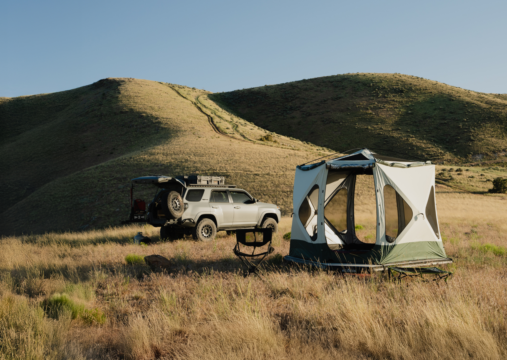
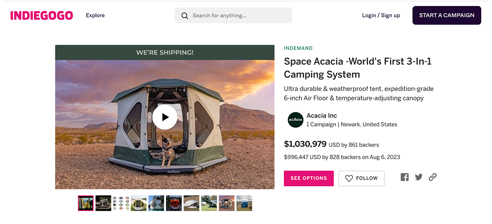
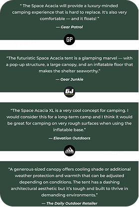
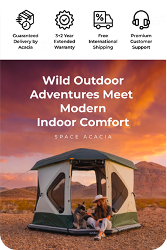
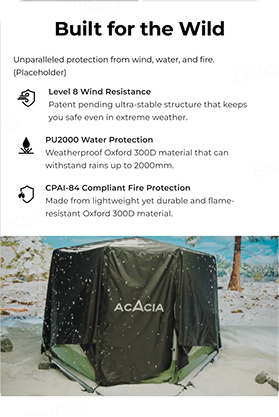
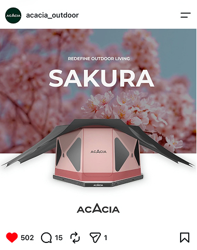
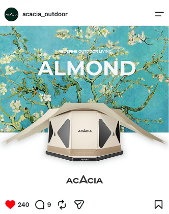
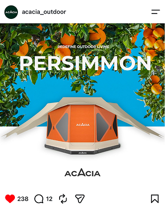
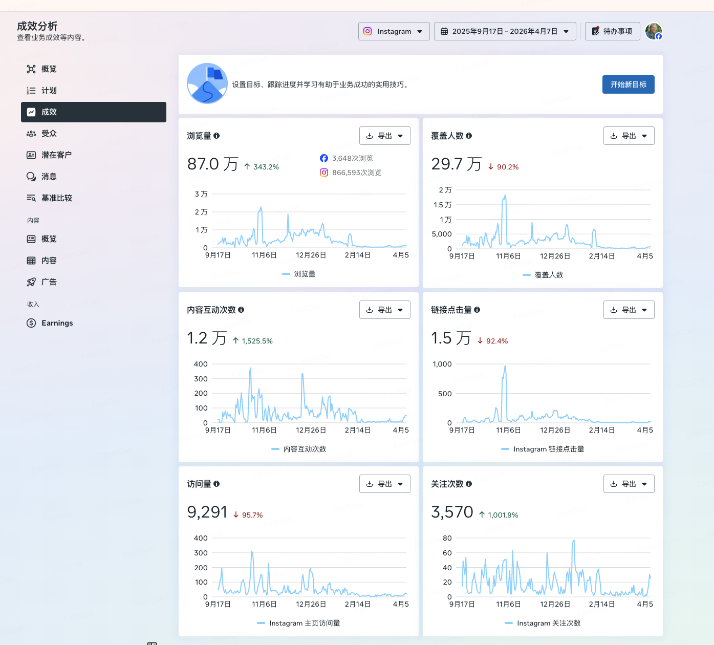

Product & Use Experience
Component relationships, features, usage and product instructions.
Clarify what the product is and how to use it.BRAND · CROWDFUNDING · DTC
From Brand Building to Crowdfunding & DTC
ACACIA is a 3-in-1 outdoor product system. At the start, the brand was unknown and the product combination needed a clear explanation. I was closely involved from the brand-building stage, working with product, marketing and content teams to clarify its value and translate the brand direction into visual identity, product guides, crowdfunding content and the subsequent DTC website.
My roleBrand Definition & Visual Identity · Crowdfunding Content · Website Design

PROJECT SNAPSHOT
[BRAND → DTC]
MY ROLE · BRAND & CROSS-TEAM COLLABORATION
Building ACACIA from scratch meant answering two questions: how should customers understand the 3-in-1 system, and what kind of outdoor experience should the brand represent? I helped define the brand direction and brought different teams’ inputs together into consistent product information, visual guidelines and launch content.
Component relationships, features, usage and product instructions.
Clarify what the product is and how to use it.Contribute to brand definition and establish the logo, colors, typography and application guidelines.
Define how the brand should be perceived.Media communication, social content, crowdfunding offers and key messages.
Align what each channel communicates to customers.Using a consistent set of product benefits, I organized product explanations, established visual rules and brought together photography, video and rendering assets. After aligning with the relevant teams, I adapted the content for different channels.
Use the media kit and lifestyle content to help journalists and customers understand the product.
Organize features, use cases, reward tiers and assurance information to support purchase decisions.
Turn product questions into clear visual explanations and support ongoing project updates.
Backer questions & feedback → Clearer product explanations and communication
A Shared Foundation for Delivery
My work spanned brand building, prelaunch, campaign launch and ongoing support, keeping product information, brand visuals and marketing content connected. Product, marketing and content teams jointly drove the crowdfunding outcome; my contribution was brand design and cross-functional design alignment.
01 · BRAND FOUNDATION
Alongside the logo, color palette, typography, packaging and photography direction, I organized product instructions, usage guides and the media kit. These explained how components worked together, showed different uses and introduced the product to the media.
A shared set of product information kept the crowdfunding page, social content and website consistent.


02 · CROWDFUNDING LAUNCH
Before launch, the team approached media with the press kit, sent advance products to creators for review videos, and expanded reach through social content and advertising. I organized the product content and visual assets for these channels.
The crowdfunding page explained what the product did, how the components worked together and what each reward tier included, followed by performance details, reviews and assurance information.
Team Crowdfunding Results
My contributionContributed to brand building, connected product information with marketing needs, and developed the visual identity, product explanations and campaign narrative for consistent communication across the page, media and social channels.
Team outcomeThe campaign was a joint effort across product, marketing and content teams. The Indiegogo record is shown below.







03 · DTC WEBSITE
I organized the launch content into 16 DTC pages. The homepage introduced the brand and product system, collection pages helped customers narrow their choices, and product pages explained specifications, accessories and purchase options.
Lifestyle imagery, reviews and assurance information continued to support product selection. The team also maintained an existing-customer community on Facebook.
Next Stage · DTC Website 1.5
Translate product and marketing requirements into page structures and UX proposals.
Specify UI, interaction and functional details, and align understanding with stakeholders and developers.
Prepare assets, coordinate with the content team and configure page content in Shopify.
Support testing, report issues and work with developers on fixes through launch.
Completed desktop and mobile designs and collaborated with the team to launch ahead of the marketing milestone.
AUTO SCROLL
Scroll inside the frame to explore the full page. Manual interaction pauses automatic scrolling.

04 · SOCIAL MEDIA
From brand launch to ongoing social content.
Alongside brand and website design, I managed ACACIA’s social media. The figures below cover the period when I managed the Instagram account.
Sep 17, 2025–Apr 7, 2026Instagram · Account management period
Source: Meta Insights. Views refer to Instagram only. Figures are rounded from the dashboard screenshot and do not distinguish organic from paid activity.
View dashboard record ＋
